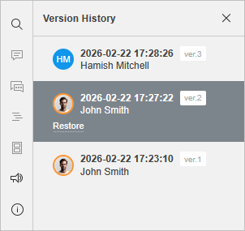

Versionsverlauf
Der PDF-Editor ermöglicht es Ihnen, einen einheitlichen teamweiten Ansatz für den Arbeitsablauf beizubehalten: Arbeiten Sie in Echtzeit an PDFs zusammen, kommunizieren Sie direkt im Editor und kommentieren Sie bestimmte Teile Ihrer PDFs, die zusätzliche Eingaben von Dritten erfordern.Im PDF-Editor können Sie den Versionsverlauf des PDFs, an dem Sie zusammenarbeiten, einsehen.
Versionsverlauf anzeigen:
Um alle am PDF vorgenommenen Änderungen anzuzeigen,
- wechseln Sie zur Registerkarte Datei,
-
wählen Sie die Option Versionsverlauf in der linken Seitenleiste
oder
- wechseln Sie zur Registerkarte Zusammenarbeit,
- öffnen Sie den Versionsverlauf über das Symbol Versionsverlauf in der oberen Symbolleiste.
Sie sehen die Liste der Dokumentversionen und Revisionen mit Angabe des Autors sowie Datum und Uhrzeit der Erstellung jeder Version/Revision. Bei Dokumentversionen wird auch die Versionsnummer angegeben (z. B. Ver. 2).
Versionen anzeigen:
Um genau zu sehen, welche Änderungen in jeder einzelnen Version/Revision vorgenommen wurden, können Sie die gewünschte Version anzeigen, indem Sie in der linken Seitenleiste darauf klicken.
Um zur aktuellen Version des Dokuments zurückzukehren, verwenden Sie die Option Verlauf schließen oben in der Versionsliste.
Versionen wiederherstellen:
Wenn Sie zu einer der vorherigen Versionen des Dokuments zurückkehren möchten, klicken Sie auf den Link Wiederherstellen unterhalb der ausgewählten Version/Revision.

Um mehr über das Verwalten von Versionen und Zwischenrevisionen sowie das Wiederherstellen früherer Versionen zu erfahren, lesen Sie bitte diesen Artikel.